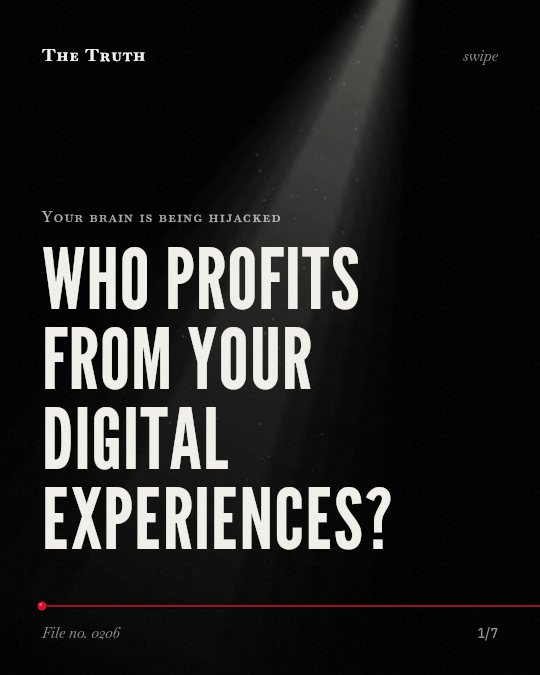

Your brain is being hijacked
Who profits from your digital experiences?

Your content is a source of commercial value.
User-generated content provides data to aid in understanding consumers and driving intelligent business. The evidence on whether this constitutes free labor or paid work is mixed.
Established. Several studies combined, or official data. The evidence is mixed.
What the research found
Digital labour is the valorisation dimension of digital work.
“Digital labour is the valorisation dimension of digital work.”
Extracted information from user-generated content can be used to aid in the early detection of diseases or to supply commercial benefits to medical companies.
“The extracted information can be used to aid in the early detection of diseases or to supply commercial benefits to medical companies.”
Experiment, 2019. Alsheref, Acta Informatica Medica.
Digital work is the organisation of human experiences with the help of the human brain, digital media and speech in such a way that new products are created.
“Digital work is the organisation of human experiences with the help of the human brain, digital media and speech in such a way that new products are created.”
User-generated content provides a valuable source of data to aid in understanding consumers and driving intelligent business.
“In the Web2. 0 era, user-generated content (UGC) provides a valuable source of data to aid in understanding consumers and driving intelligent business.”
Systematic review, 2022. Li et al., Mathematics.
Analyzing generated contents can lead to the attainment of a vast amount of information, such as users' feelings on specific products or events, or personal information about life events.
“Analyzing the generated contents can lead to the attainment of a vast amount of information, such as users' feelings on specific products or events, or personal information about life events.”
Experiment, 2019. Alsheref, Acta Informatica Medica.
The proposed model for detecting medical information in generated contents achieves 94.6% accuracy and 87% precision.
“Experimental results demonstrate that the proposed model achieves 94.6% accuracy and 87% precision.”
Experiment, 2019. Alsheref, Acta Informatica Medica.
The distinction between work and labor.
Digital work is the organization of experiences to create new products. Digital labor is the valorisation dimension of that work. Your brain and speech help create these products.
How you are perceived by systems.
That may be why your personal life events and feelings on products are analyzed. Systems use your data to detect diseases or supply commercial benefits to companies.
This part is our reading of the evidence, not a finding.
A quiet evening at home.
You sit in your chair and post a photo of your dinner. You share a thought about a new movie. The system records these moments.
The honest summary
The evidence confirms that user-generated content is a primary source of data for business and commercial benefits, but it frames this through the specific distinction between 'digital work' and 'digital labour'.
The sources do not explicitly quantify the extent to which users are compensated or if their labor is 'free' in a financial sense.
Who owns the value of your experiences?
Sources
- Shugang Li, Fang Liu, Yuqi Zhang et al. (2022). Text Mining of User-Generated Content (UGC) for Business Applications in E-Commerce: A Systematic Review. Mathematics. Systematic review, cited 56 times.
- Fahad Kamal Alsheref (2019). Medical Information Extraction Model for User-generated Content. Acta Informatica Medica. Experiment, cited 1 times.
- Christian Fuchs, Sebastian Sevignani (2013). What Is Digital Labour? What Is Digital Work? What’s their Difference? And Why Do These Questions Matter for Understanding Social Media?. tripleC Communication Capitalism & Critique Open Access Journal for a Global Sustainable Information Society. Study, cited 361 times.
Also read for this file, not quoted
- Hastuti et al. (2025). Algorithmic influence and media legitimacy: a systematic review of social media’s impact on news production.
- Sokolova & Lapalme (2011). Learning opinions in user-generated web content.
- Lind (2012). Produsing Theory in a Digital World: The Intersection of Audiences and Production in Contemporary Theory.
This file was researched and drafted by software, then checked by rules a model cannot talk its way around: each quote above was matched word for word against the paper, and every number had to appear in it. How files are made.